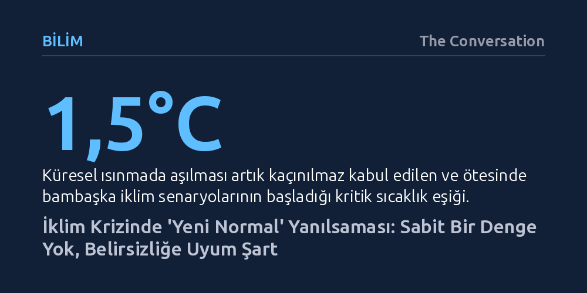

BILIM · The Conversation · 2026-10-09
Küresel ısınmanın yeni bir iklim dengesine oturacağı beklentisi bilimsel gerçeklerle uyuşmuyor; sera gazı salımları sürdükçe hava olayları öngörülemez biçimde şiddetlenmeye devam edecek. Eski istatistiklerin geçersiz kaldığı bu süreçte 'yeni normal' avuntusunu bırakıp kesintisiz bir belirsizliğe uyum sağlamak zorundayız.
İklim krizinin bir noktada durulup yeni bir düzene kavuşacağı algısını yıkarak, geleceğin sabit bir durum değil, sürekli yönetilmesi gereken bir belirsizlik hali olduğunu gösterir.

Aşırı sıcak dalgaları, kontrol edilemeyen mega yangınlar ve rekor kıran seller karşısında kamuoyunda sıkça duyulan bir teselli var: Artık "yeni bir normalde" yaşadığımız fikri. İnsan zihni doğası gereği rutinleri ve öngörülebilirliği arar; küresel sıcaklık artışının 1,5°C sınırını aştıktan sonra yeni bir iklim dengesine oturacağını düşünmek bu yüzden rahatlatıcı gelir. Oysa bilimsel gerçeklik, bu algının ne kadar yanıltıcı olduğunu ortaya koyuyor. 1,5°C eşiğini geçmek bir odadan çıkıp başka bir odaya adım atmaya benzemiyor.
Küresel sera gazı salımları henüz tepe noktasına dahi ulaşmamışken, iklim sisteminin bir noktada durup yeni bir denge kurmasını beklemek temelsiz bir iyimserliktir. Önümüzde tek bir sabit gelecek bulunmuyor. Isınmanın 2°C'ye ulaşması durumunda karşılaşacağımız tablo bambaşka olacak; 2,5°C veya 3°C gibi seviyelerde ise iklim tamamen tanınmaz bir hale gelecek. Bu aşamaların herhangi birini "yeni normal" diye nitelemek, gelecekteki tehlikeleri hafife almamıza ve riski yanlış okumamıza yol açan tehlikeli bir kavramsal tuzaktır.
Geleneksel meteorolojide iklim, anlık hava durumu değil; genellikle 30 yıllık bir dönemi kapsayan hava kalıplarının istatistiksel parmak izidir. Toplumlar su kaynaklarını, tarım takvimlerini ve barajlarını geçmişin bu 30 yıllık uç değerlerine göre planlardı. Ancak günümüzde atmosfer, insanlık tarihinde görülmemiş bir hızla değişiyor. Bu hızlı dönüşüm nedeniyle artık geçmişin 30 yıllık ortalamalarını alıp geleceğe yansıtma şansımız kalmadı.
Dahası, ısınan bir dünya mevcut hava olaylarını sadece doğrusal ve düzenli biçimde artırmakla kalmıyor; daha önce kayıtlara geçmemiş yeni bileşimler ve uç noktalar üretiyor. Şiddetli bir kuraklığın hemen ardından gelen yıkıcı seller veya dev orman yangınlarının kendi fırtına ve şimşeklerini doğurduğu pirokümülobüs bulutları, birkaç on yıl öncesine kadar neredeyse bilinmeyen olgulardı. Sanayi öncesi dönemin doğal sınırlarını dahi tam olarak belgeleyemeden eski normali terk ettik ve şimdi istatistiksel modellerin öngöremediği yeni aşırılıklarla yüzleşiyoruz.
Yaşanan felaketlerin tek sorumlusu atmosferdeki sıcaklık artışı değil. Son yüzyılda kentlerin kontrolsüz büyümesi, tarım arazilerinin genişlemesi ve altyapıların yayılması, toplumsal kırılganlığımızı iklim değişikliğinden bağımsız olarak da artırdı. Doğal yaşam alanları parçalanıp tahrip edildiği için bugün Avustralya'daki bir orman yangınında yaban hayvanlarının kaçacak koridoru kalmıyor. Benzer şekilde, kıyılarda 50 yıl öncesine kıyasla çok daha fazla yerleşim ve işletme bulunduğu için, tarihsel normlar dahilindeki sıradan bir fırtına kabarması dahi eskisinden çok daha geniş kitleleri vuruyor.
İklim krizi tam da bu noktada bir "risk çarpanı" işlevi görüyor. Zaten kendi ellerimizle kırılganlaştırdığımız ve yoğunlaştırdığımız yaşam alanları, tırmanan sıcaklıklar ve düzensizleşen yağış rejimleriyle birleştiğinde afetlerin yıkıcılığı katlanıyor. Karşı karşıya kaldığımız kriz, sadece değişen bir atmosferden değil; bu atmosferle çarpışan savunmasız yerleşim düzenimizden kaynaklanıyor.
Geleceğin belirsizliği karşısında çaresizlik, keder veya öfke hissetmek son derece insani bir tepkidir. Ancak küresel müzakerelerin uzun süre yalnızca emisyon azaltımına odaklanması ve istenen düşüşün sağlanamaması, iklim krizinin kaçınılmaz bir kıyamet senaryosu gibi algılanmasına yol açmamalıdır. İnsan türü binlerce yıldır değişen koşullara uyum sağlayarak hayatta kaldı. Şimdi yapılması gereken, sahte bir "normal" arayışından vazgeçip pratik ve acil uyum stratejilerine odaklanmaktır.
Burada yapılacak en büyük hata, emisyonları azaltmak ile iklim değişikliğine uyum sağlamayı birbirinin alternatifi gibi görmektir. Gezegenin geleceği her ikisinin de eş zamanlı yürütülmesine bağlıdır. Temiz enerji, elektrikli ulaşım ve onarıcı tarım gibi adımlarla sıcaklık artışını ne kadar frenleyebilirsek, toplumların ve ekosistemlerin yeni koşullara uyum sağlaması o kadar olanaklı hale gelecektir. İlk ve en kritik adım ise geçmişin referanslarına sığınmayı bırakıp geleceğin belirsiz doğasını kabul etmektir.